Fisheries management when quotas are costly to change
Carl Boettiger, Michael Bode, James Sanchirico, Jacob LaRiviera, Alan Hastings, Paul Armsworth
08/12/2014
Our world is changing

Overpeck+ (2011) doi: 10.1126/science.1197869
Our policies are not
Alex Wong (Getty Images)
Natural populations fluctuate…
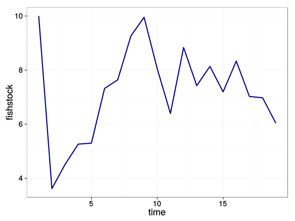
So then, do our optimal policies
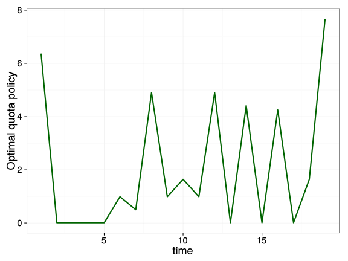
Real policies: not so much
NOAA
Bluefin Tuna Stocks vs US Quota, ICCAT 1987 - 2007
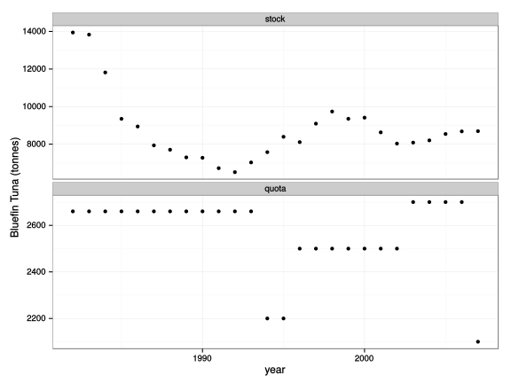
As ecologists, we’ve ever focused on accounting for ecological dynamics
Not so good at policy dynamics
- We account for ecological dynamics but not political ones
- We don’t know the equations of politics (does anyone?)
- Instead, we can investigate the potential impact that costly adjustments have on optimal policy
Model setup
Focus on stochastic dynamics: thus a constant harvest is not optimal.
Follow the textbook classic approach: Reed (1979) 10.1016/0095-0696(79)90014-7
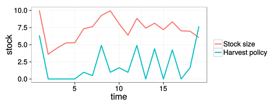
Fish population dynamics
(state equation)
Population grows under a Beverton-Holt stock-recruitment curve,
\[N_{t+1} = Z_t \frac{A (N_t - h_t)}{1 + B (N_t - h_t)}\]
- subject to multiplicitive log-normal growth shocks \(Z_t\)
Optimization
Select harvest policy that maximizes the Net Present Value (NPV) of the stock:
\[\max_{{\bf h}}\mathbf{ E} ( NPV_{0} )=\max_{{\bf h}} \sum_0^\infty \mathbf{E} \left(\frac{\Pi_0(N_t,h_t)}{(1+\delta)^{t+1}} \right)\]
- Profits from harvesting depend on price and costs \(\Pi_0(N_t,h_t) = p h_t - c_0 E_t(N_t, h_t) \)
- Harvest quota \(h_t\) in year \(t\)
- Stock size \(N_t\), measured before harvest
- discount rate \(\delta\)
Costs of policy adjustment
- We replace \(\Pi_0\) in the \(NPV_0\) equation with…
“Linear costs”
\[\Pi_{1}(N_t,h_t, h_{t-1}) = \Pi_0 - c_1 | h_t - h_{t-1} | \]
- All previous terms, minus:
- The cost to change the harvest policy (quota): proportional to the size of the change
“Quadratic costs”
\[\Pi_{2}(N_t,h_t, h_{t-1}) = \Pi_0 - c_2 ( h_t - h_{t-1})^2 \]
- Small adjustments are very cheap
- Large adjustments are very expensive
- Closest to typical assumptions of quadratic costs on harvest/effort (but hear it is the change in harvest/effort)
“Fixed costs”
\[\Pi_{3}(N_t,h_t, h_{t-1}) = \Pi_0 - c_3 (1-\mathbb{I}(h_t, h_{t-1})) \]
- A fixed transaction fee for any change to policy, independent of size.
(\(\mathbb{I(x,y)}\) is indicator function, equals 1 iff \(x=y\), zero otherwise.)
Apples to Apples
How do we pick coefficients \(c_i\) such that only the functional form and not the overall cost differ?
Apples to Apples
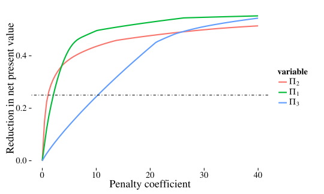
Problem defined. Time to compute solutions.
Implementation:
Stochastic Dynamic Programming
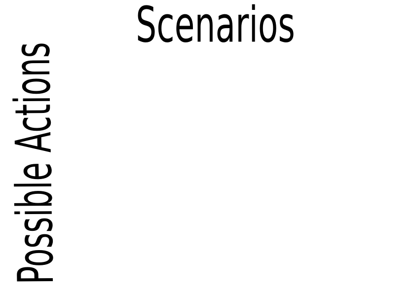
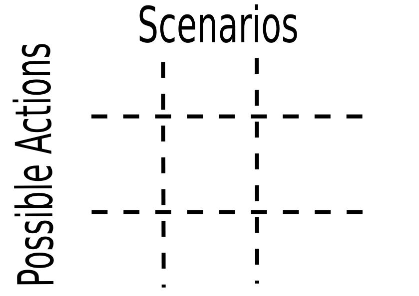

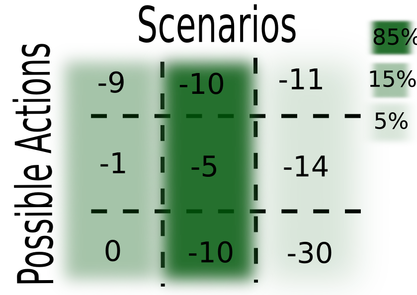
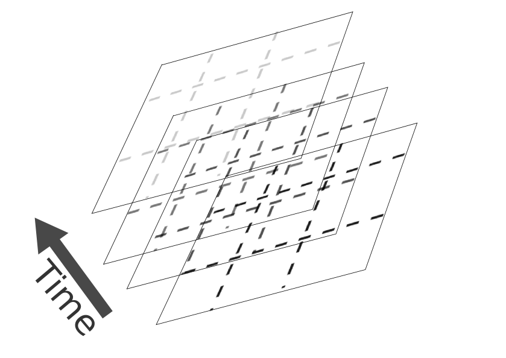
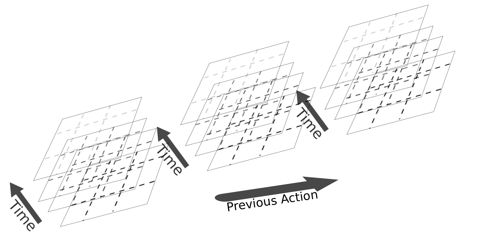
Effect of policy adjustment costs on optimal quotas and stock sizes
What would you predict for…
- Quadratic adjustment costs?
- Linear adjustment costs?
- Fixed adjustment costs?
Quadratic Costs (\(\Pi_2\))
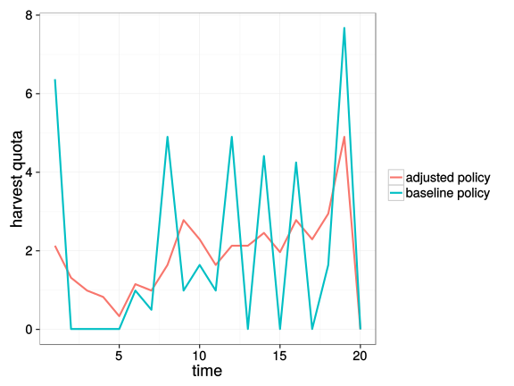
Fixed Costs (\(\Pi_3\))
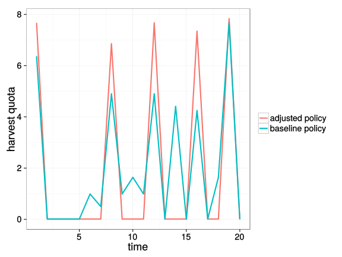
Linear Costs (\(\Pi_1\))
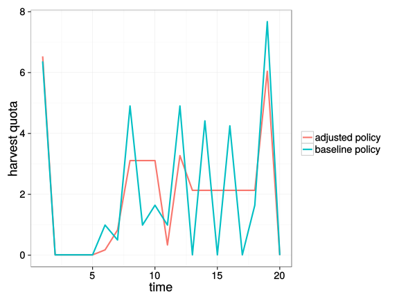
(For comparison)
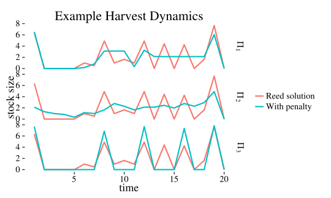
General trends
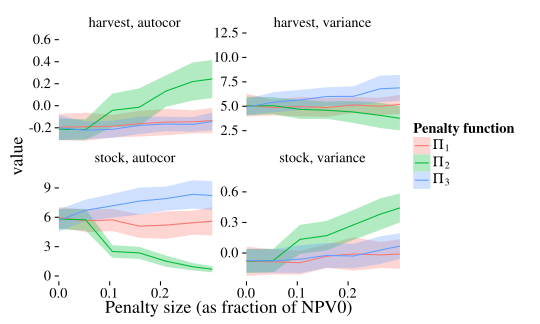
- Quadratic (\(\Pi_2\)) smooths, Linear (\(\Pi_1\)) flattens, Fixed (\(\Pi_3\)) jumps
Okay, so the policies “look” different. Does it matter?
Yes
Managing under the wrong assumptions
\[NPV_i( h_1^* ) = \sum_{t=0}^\infty (\overbrace{ p h^*_{1,t}-c_0E^*_{1t}}^{[1]}-\overbrace{c_1 | h^*_{1,t}- h^*_{1,t-1}|}^{[2]} ) \frac{1}{(1+\delta)^t}\]
\[NPV_i( h_0^* ) = \sum_{t=0}^\infty (\underbrace{ p h^*_{0,t}-c_0E^*_{0t}}_{[3]}-\underbrace{c_1 | h^*_{0,t}- h^*_{0,t-1}|}_{[4]} ) \frac{1}{(1+\delta)^t}\]
- Dockside profits when accounting for adjustment cost
- (Anticipated) Fees paid for adjusting the policy
- Theoretical maximum dockside profits
- (Unanticipated) fees for those adjustments
Consequences of policy adjustment costs
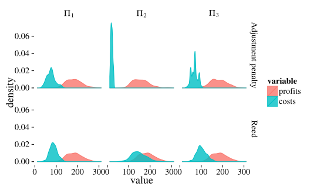
Consequences of policy adjustment costs
What is the impact of assuming costs are present when they are not?
- Very little change to your bottom line (regardless of cost structure)
What is the impact of ignoring costs when they are present?
- Substantially higher costs (particularly for quadratic costs).
To say that another way:
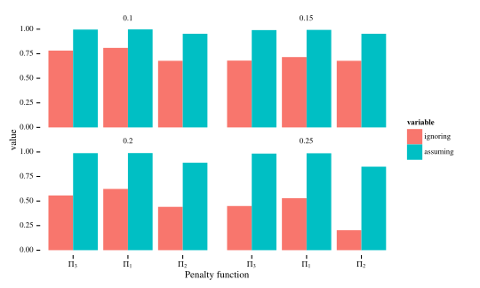
What about managing when costs are present…
..but you’re using the wrong model??
Mismatches are even worse:
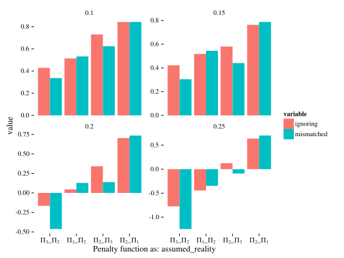
Mismatched costs are intuitive if we remember the general patterns
- Quadratic (\(\Pi_2\)) smooths
- Linear (\(\Pi_1\)) flattens
- Fixed (\(\Pi_3\)) jumps
Predict which is worse: assuming the wrong cost or no assuming no cost at all, when:
- Costs are assumed linear but in reality quadratic?
- True costs are assumed quadratic but in reality fixed?
Mismatched costs are intuitive
Conclusions
- Policies reflecting the best ecology may ultimately be impractical
- Novel look at introducing costs to changes in policy
- Details matter: some adjustment costs make policy less smooth, some more smooth
- Solutions can satisfy the constraints of adjustment costs while performing nearly optimally
- Ignoring adjustment costs can result in significant penalties
- There are many benefits to joining a NIMBioS working group
Acknowledgements


Slides, data, references, code and more at: http://io.carlboettiger.info/pdg_control